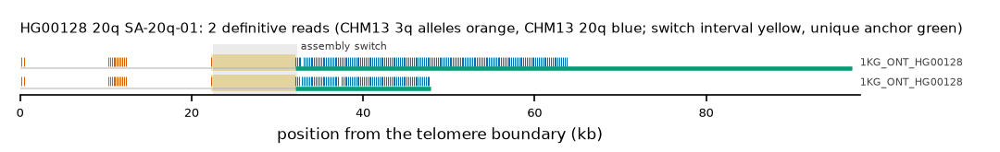

HG00128 20q: SA-20q-01
Claim HG00128|20q|SA-20q-01. All claims
- cohort
- 1000 Genomes ONT
- individual
- HG00128
- haplotype
- hap2
- arm
- 20q
- allele
- SA-20q-01 (foreign)
- model
- donor CHM13 3q, proximal CHM13 20q, recipient CHM13 20q, pattern DP
- claimed end(s)
HG00128#2#CM090106.1#R- assembly switch
- 30,958 bp from the telomere boundary; on CHM13 chr20:66177732; own-window projection 22500-32300 bp
- v1 verdict
- confirmed (confirmed)
- definitive tier
- definitive
- reads
- 2 conclusive switch-concordant, 0 discordant, 3 contradicting, 1 consistent; 2 definitive (1KG_ONT_HG00128)
- by tier
- definitive:2;consistent:1;contradicts:3
- source
- https://ftp.1000genomes.ebi.ac.uk/vol1/ftp/data_collections/1KG_ONT_VIENNA/t2t/HG00128.t2t.cram
- note
- confirmed:robust; keep

Conclusive and contradicting reads (5)
1 further reads are consistent (switch test passed, but no terminal telomere, anchor or integrity); they are
listed in reads.tsv.gz. Switch: 95% interval in subtelomere coordinates (kb from the
telomere boundary) and projected on CHM13 20q. Each samtools command prints the read's record
from its public file (CRAM: add the CHM13 v2.0 FASTA as -T).
| read | dataset | tier | length | switch (subtelomere, kb) | switch on CHM13 | donor units / purity | proximal units / purity | anchor (CHM13, MAPQ, unique) | own-assembly best end | fetch |
|---|---|---|---|---|---|---|---|---|---|---|
fa87cfd8-bbb5-4a1d-9379-1edf5b18a691 | 1KG_ONT_HG00128 | definitive | 98,487 | 22.3-32.1 | chr20:66176414-66186214 | 14 / 1.00 | 158 / 1.00 | chr20:66111509-66176411, 60, 32.0 kb | HG00128#2#CM090106.1#R (95.8%) ✓ | samtoolssamtools view -F 0x900 -T chm13v2.0.fa.gz -X 'https://ftp.1000genomes.ebi.ac.uk/vol1/ftp/data_collections/1KG_ONT_VIENNA/t2t/HG00128.t2t.cram' 'https://ftp.1000genomes.ebi.ac.uk/vol1/ftp/data_collections/1KG_ONT_VIENNA/t2t/HG00128.t2t.cram.crai' 'chr20:66205256-66210255' | awk -v r='fa87cfd8-bbb5-4a1d-9379-1edf5b18a691' '$1==r' |
62fb6d18-7c08-4695-b71d-a699866955f4 | 1KG_ONT_HG00128 | definitive | 54,439 | 22.3-32.1 | chr20:66176381-66186181 | 14 / 1.00 | 77 / 1.00 | chr20:66160606-66176385, 60, 7.6 kb | HG00128#2#CM090106.1#R (95.7%) ✓ | samtoolssamtools view -F 0x900 -T chm13v2.0.fa.gz -X 'https://ftp.1000genomes.ebi.ac.uk/vol1/ftp/data_collections/1KG_ONT_VIENNA/t2t/HG00128.t2t.cram' 'https://ftp.1000genomes.ebi.ac.uk/vol1/ftp/data_collections/1KG_ONT_VIENNA/t2t/HG00128.t2t.cram.crai' 'chr20:66205256-66210255' | awk -v r='62fb6d18-7c08-4695-b71d-a699866955f4' '$1==r' |
d147f534-d27b-45a4-810c-6dfff54911de | 1KG_ONT_HG00128 | contradicts | 89,653 | 0.1-4.5 | chr20:66202916-66207316 | 1 / 0.00 | 169 / 0.99 | chr20:66120711-66176273, 60, 32.0 kb | samtoolssamtools view -F 0x900 -T chm13v2.0.fa.gz -X 'https://ftp.1000genomes.ebi.ac.uk/vol1/ftp/data_collections/1KG_ONT_VIENNA/t2t/HG00128.t2t.cram' 'https://ftp.1000genomes.ebi.ac.uk/vol1/ftp/data_collections/1KG_ONT_VIENNA/t2t/HG00128.t2t.cram.crai' 'chr20:66205256-66210255' | awk -v r='d147f534-d27b-45a4-810c-6dfff54911de' '$1==r' | |
5bbc6279-7a0b-43c8-b4b2-f9cda0abfc02 | 1KG_ONT_HG00128 | contradicts | 78,984 | 0.5-3.7 | chr20:66202801-66206001 | 1 / 1.00 | 157 / 0.99 | chr20:66124447-66173381, 60, 32.0 kb | samtoolssamtools view -F 0x900 -T chm13v2.0.fa.gz -X 'https://ftp.1000genomes.ebi.ac.uk/vol1/ftp/data_collections/1KG_ONT_VIENNA/t2t/HG00128.t2t.cram' 'https://ftp.1000genomes.ebi.ac.uk/vol1/ftp/data_collections/1KG_ONT_VIENNA/t2t/HG00128.t2t.cram.crai' 'chr20:66205256-66210255' | awk -v r='5bbc6279-7a0b-43c8-b4b2-f9cda0abfc02' '$1==r' | |
08c5fc6b-56ca-46d5-b75b-4fb4025106d9 | 1KG_ONT_HG00128 | contradicts | 52,492 | 0.1-0.3 | chr20:66207508-66207708 | 1 / 0.00 | 106 / 1.00 | chr20:66156896-66176521, 60, 11.3 kb | samtoolssamtools view -F 0x900 -T chm13v2.0.fa.gz -X 'https://ftp.1000genomes.ebi.ac.uk/vol1/ftp/data_collections/1KG_ONT_VIENNA/t2t/HG00128.t2t.cram' 'https://ftp.1000genomes.ebi.ac.uk/vol1/ftp/data_collections/1KG_ONT_VIENNA/t2t/HG00128.t2t.cram.crai' 'chr20:66205256-66210255' | awk -v r='08c5fc6b-56ca-46d5-b75b-4fb4025106d9' '$1==r' |
Files
CRAM/BAM on CHM13 v2.0, BAM on the person's own assembly windows and the window FASTA: release asset subtel_read_evidence_v1_1KG_ONT.tar.gz, directory read_evidence_v1/1KG_ONT/HG00128__20q__SA-20q-01/ (downloads).
Re-derive this verdict
git clone https://github.com/jlanej/human-subtelomere-atlas && cd human-subtelomere-atlas
evidence/replicate_claim.sh 'HG00128|20q|SA-20q-01'The script fetches the cited reads from the public source by region and read ID, re-runs the frozen criteria and compares every per-read and claim verdict with this page (details).